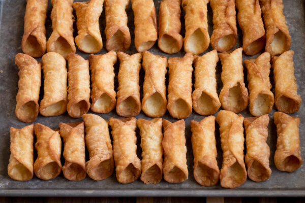

Image: several cannoli shells on an oven tray.
Cannoli with the ricotta filling can be rich and deliciously sweetened, and those little flecks of mini dark chocolate chips swirled throughout just amp up that already immensely satisfying flavor.
These delectable Italian delicacies are truly worth learning to make!